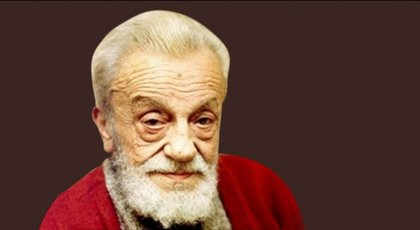

Kaldırımlar

I Sokaktayım, kimsesiz bir sokak ortasında; Yürüyorum, arkama bakmadan yürüyorum. Yolumun karanlığa saplanan noktasında, Sanki beni bekleyen bir hayal görüyorum. Kara gökler kül rengi bulutlarla kapanık; Evlerin bacasını kolluyor yıldırımlar. İn cin uykuda, yalnız iki yoldaş uyanık; Biri benim, biri de serseri kaldırımlar. İçimde damla damla bir korku birikiyor; Sanıyorum, her sokak başını kesmiş devler... Üstüme camlarını, hep simsiyah, dikiyor; Gözüne mil çekilmiş bir âmâ gibi evler. Kaldırımlar, çilekeş yalnızların annesi; Kaldırımlar, içimde yaşamış bir insandır. Kaldırımlar, duyulur, ses kesilince sesi; Kaldırımlar, içimde kıvrılan bir lisandır. Bana düşmez can vermek, yumuşak bir kucakta; Ben bu kaldırımların emzirdiği çocuğum! Aman, sabah olmasın, bu karanlık sokakta; Bu karanlık sokakta bitmesin yolculuğum! Ben gideyim, yol gitsin, ben gideyim, yol gitsin; İki yanımdan aksın, bir sel gibi fenerler. Tak, tak, ayak sesimi aç köpekler işitsin; Yolumun zafer tâkı, gölgeden taş kemerler. Ne sabahı göreyim ne sabah görüneyim; Gündüzler size kalsın, verin karanlıkları! Islak bir yorgan gibi, sımsıkı bürüneyim; Örtün, üstüme örtün, serin karanlıkları. Uzanıverse gövdem, taşlara boydan boya; Alsa buz gibi taşlar alnımdan bu ateşi. Dalıp, sokaklar kadar esrarlı bir uykuya, Ölse, kaldırımların kara sevdalı eşi... II Başını bir gayeye satmış bir kahraman gibi, Etinle, kemiğinle, sokakların malısın! Kurulup şiltesine bir tahtaravan gibi, Sonsuz mesafelerin üstünden aşmalısın! Fahişe yataklardan kaçtığın günden beri, Erimiş ruhlarınız bir derdin potasında. Senin gölgeni içmiş, onun gözbebekleri; Onun taşı erimiş, senin kafatasında. İkinizin de ne eş ne arkadaşınız var; Sükût gibi münzevî, çığlık gibi hürsünüz. Dünyada taşınacak bir kuru başınız var; Onu da hangi diyar olsa götürürsünüz. Yağız atlı süvari, koştur, atını, koştur! Sonunda kabre çıkar bu yolun kıvrımları. Ne kaldırımlar kadar seni anlayan olur... Ne senin anladığın kadar, kaldırımları... III Bir esmer kadındır ki, kaldırımlarda gece, Vecd içinde başı dik, hayalini sürükler. Simsiyah gözlerine, bir ân, gözüm değince, Yolumu bekleyen genç, haydi düş peşime der. Ondan bir temas gibi rüzgâr beni bürür de, Tutmak, tutmak isterim, onu göğsüme alıp. Bir türlü yetişemem, fecre kadar yürür de, Heyhat, o bir ince ruh, bense etten bir kalıp. Arkamdan bir kahkaha duysam yaralanırım; Onu bir başkasına râm oluyor sanırım, Görsem pencerelerde soyunan bir karaltı. Varsın, bugün bir acı duymasın gözyaşımdan; Bana rahat bir döşek serince yerin altı, Bilirim, kalkmayacak, bir yâr gibi başımdan...